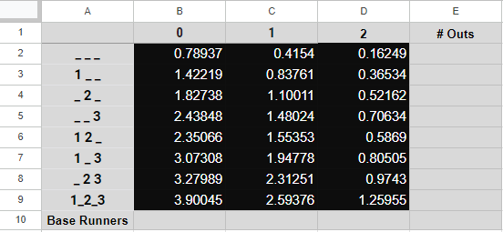
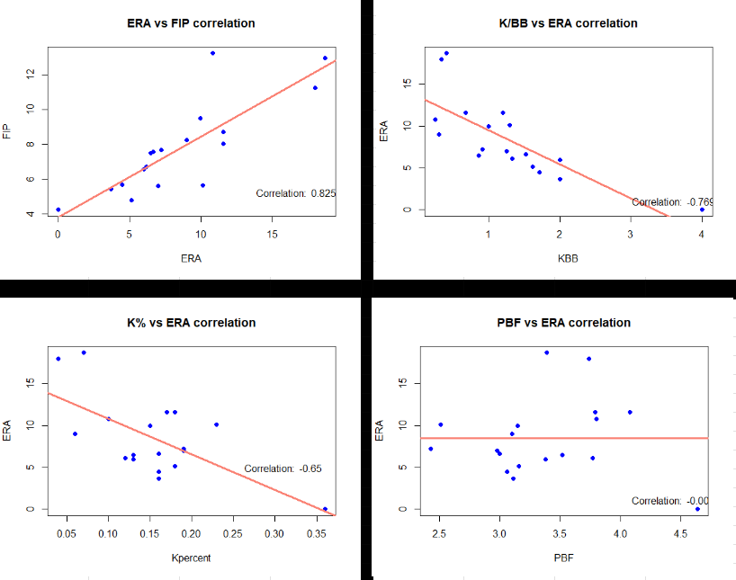

A Dive into Run Expectancy
If you've been around the game of baseball, you've almost certainly heard the old adage "the best pitch in baseball is a first pitch strike". First pitch strikes are pitchers' best friends (that, and double plays). According to this article posted by Weinstein Baseball, 92% of first-pitch strikes result in either strike one, or an out, meaning that only 8% result in hits. Conversely, 70% of walks start with a first pitch ball. As they say in the article, "the numbers don't lie. If you want success on the mound, throw first pitch strikes."

Run Expectancy
What you're looking at here is a run expectancy matrix for a high-offensive conference that I just so happen to play in at the Division III college level. This was obtained by copying the numbers from Fangraphs' RE24 MLB matrix, and multiplying all numbers by a constant that accounts for a higher-offensive environment. Although I understand this is quick and dirty mathematics, I'm too busy and have better things to do with my time than to crunch play-by-play numbers from scratch to account for a perfect matrix. For now, this works just fine for my mini-project.
If you've never worked with or looked at a Run Expectancy matrix, or any matrix at all for that matter, I'll help you out. The columns of this matrix are divided into 3, labeled "0", "1", and "2". The columns will be used to determine how many outs there are in a given situation. Along the left-hand side are your rows, located with numbers and underscores. These represent your baserunners in a given situation. For example, in the 7th row, the label is "1 _ 3", and this represents runners on 1st base and 3rd base, with nobody on 2nd base.
What is the use of this, you ask? This matrix displays how many runs would be expected to score given a certain situation. For example, if you take a look at row 7 column 2, you'll find that you are looking at a situation of 1st and 3rd, 1 out, and the resulting run expectancy (RE) is 1.94. In English, this is saying that in all prior scenarios with these exact circumstances, teams end up giving up an average of 1.94 runs per scenario.
Applying It
Early on in our 2024 baseball season, our pitching staff had tremendous talent with serious potential, but continued to beat themselves: walks. Among other free bases we were giving up such as HBPs and Wild Pitches, walks were absolutely killing us as a pitching staff. It was almost like a disease plaguing the staff; even some of our more polished guys were surrendering walks at a pace I hadn't seen before. Eventually, it got so bad I began to wonder how many free runs (runs!!) we were giving up just from walking batters. Knowing about run expectancy, I got to work and after about our 7th or 8th game, I started the Free Run tracker on a google sheet.
The Free Run tracker has seen many modifications since its origin, as it began as nothing more than a leaderboard that tracked run expectancy differentials on what I called "free passes", which were walks, HBPs, wild pitches, and balks. I chose these 4 outcomes because the batters and baserunners have to do zero work to either get on base or advance to the next base. Essentially, us as a pitching staff are gifting the opponents bases totally free.
All of this is calculated using the run expectancy calculator, which is (REa - REb) + (X) = REc. In this formula, REa is your post-play run expectancy, REb is your pre-play run expectancy, X is how many real runs are given up on the specified play, and REc is the change in run expectancy on the play. For example, say that you walk the leadoff batter. The REb for this play would be "_ _ _" and 0 outs, yielding a run expectancy of 0.8. The REa for this play would be "1 _ _" and 0 outs, yielding a run expectancy of 1.4. Since you only walked a batter and no runs scored, X would be 0. Plugging these numbers into the formula, you would REc = 0.6, meaning that the run expectancy change was 0.6, or you as the pitcher gave up 0.6 "free runs" on that play.
Using R, I would scrape play-by-play data and dump it into a google sheet linked to my main run-expectancy sheet. I would filter out the plays so that it only included those plays with the 4 free outcomes I mentioned earlier, and track how many free runs were being given up per pitcher. These numbers would be linked back to the original run-expectancy tracker table, and I would do operations on these numbers, such as seeing who had the most total, averages per appearance / inning, or even compare the average number of "free runs" per game to the average number of real runs given up per game.

Further Analysis
As time went on, I wanted to delve deeper and eventually dug myself into quite the rabbit hole of number analysis. I began tracking more stats like face-value stats including ERA, WHIP, and Appearances. Additionally, I started tracking some more advanced sabermetric numbers such as ERA+, FIP, K% and BB%, and more. I wanted to understand the correlations of it all and how they relate to a pitcher's biggest problem: giving up runs. I began looking at numbers like FR%, BB%, and PPI (Free Run%, Walk%, Pitches per Inning), and comparing them against ERA. The analytic mind inside my head couldn't help myself, and I couldn't get enough. I started tracking numbers like Game Score for our starting pitchers and seeing how it related to winning percentage, and more and more. It's never enough!

Conclusion
Eventually and unfortunately, our season did come to a close as we lost on a heartbreaking walk-off hit in the playoffs. My season both on the field and behind a screen came to a close, and there were no more pitches to be hit or numbers to be entered into my master spreadsheet. I had a lot of fun both on an off the field, and it's always interesting to take a look at numbers and see how they relate to the product on the field... for me at least. Here's to my next adventure (looking at you, florida!)